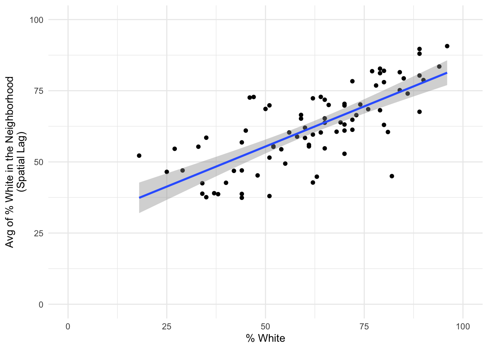
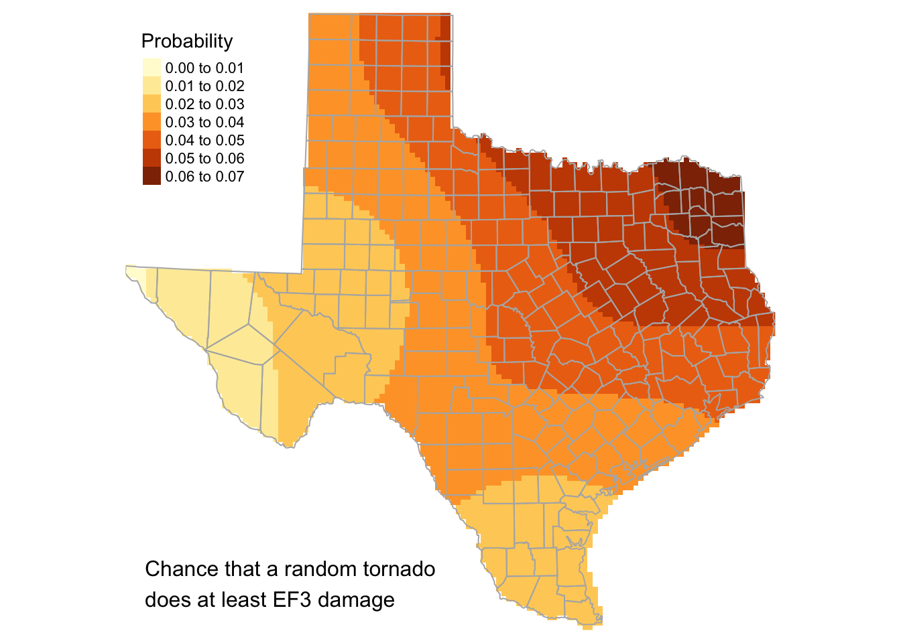
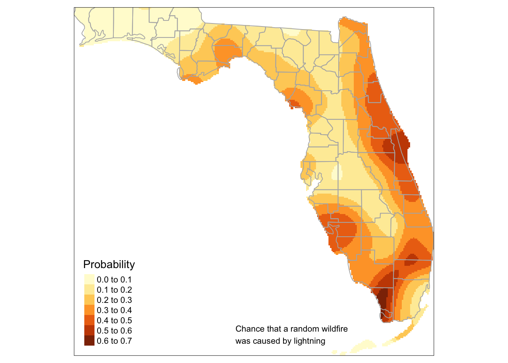

2 Data Frames
“Measuring programming progress by lines of code is like measuring aircraft building progress by weight.” — Bill Gates
Last week: What this course is about, how I’m going to grade you, and how to get started with R, RStudio, and RStudio Cloud. Today: Data frames, getting data into R, manipulating data and making simple plots using base R functions.
2.1 Do you need additional help getting started?
The package swirl contains functions to help you learn the basics of working with R. The install.packages() function gets the package from an CRAN mirror site. This needs to be done only once to your local computer. To make the functions work in your current session you must use the library() function. This needs to be done for every session, but only once per session.
- Don’t know any R? Choose the lesson: R Programming. I recommend you work through lessons 1:8. You can exit swirl and return to the R prompt (>) at any time with the Esc key.
- Know a bit of R, but you need help? Try https://www.r-project.org/help.html
Note: To update packages using update.packages() or select the green rounded arrow in the lower right panel.
2.2 Another data frame
Consider answers on questions given to all students in an introductory statistics class at Bowling Green State University. Some of the questions were: What is your height? Choose a number between 1 and 10. Give the time you went to bed last night. The data are available as a data frame called studentdata in the package LearnBayes.
First, install the package.
Next, make a copy of the data frame and call it df. Then print the first six rows using the head() function and list only the 10th row.
## Student Height Gender Shoes Number Dvds ToSleep WakeUp Haircut Job Drink
## 1 1 67 female 10 5 10 -2.5 5.5 60 30.0 water
## 2 2 64 female 20 7 5 1.5 8.0 0 20.0 pop
## 3 3 61 female 12 2 6 -1.5 7.5 48 0.0 milk
## 4 4 61 female 3 6 40 2.0 8.5 10 0.0 water
## 5 5 70 male 4 5 6 0.0 9.0 15 17.5 pop
## 6 6 63 female NA 3 5 1.0 8.5 25 0.0 waterRecall data frames are like spreadsheets with rows and columns. The rows are the observations and the columns are the variables. All columns are of the same length like a matrix. We identify particular data elements of the matrix using the bracket notation [row, column] where row is the row number and column is the column number.
For example here we identify all the columns in the 10th row.
## Student Height Gender Shoes Number Dvds ToSleep WakeUp Haircut Job Drink
## 10 10 65 male 10 7 22 2.5 8.5 12 0 milkDrink preference was one of the questions. The responses are available in the column labeled Drink as a vector. We identify this vector using the $ notation, where the name before the dollar sign identifies the data frame and the name after the dollar sign identifies the column name (dataframeName$columnName).
So we list all the drink preferences using
## [1] water pop milk water pop water water pop water milk milk water
## [13] pop milk pop water water pop water water water water water milk
## [25] pop water water pop water water water water pop water water water
## [37] pop milk pop water water water pop milk water water water pop
## [49] pop water milk pop pop water water pop milk pop pop water
## [61] water water water water water milk pop pop pop water water water
## [73] pop water pop pop water pop pop milk water pop water water
## [85] milk pop water water pop water water water milk water pop water
## [97] pop pop pop water water pop water pop milk milk water water
## [109] water water water pop water milk milk milk water milk pop water
## [121] pop pop pop pop water water water water water water milk water
## [133] pop milk water water water water water <NA> pop water water pop
## [145] milk milk water water pop water water water pop water <NA> water
## [157] water water water water milk milk water milk water water milk water
## [169] pop pop pop water pop pop water water milk milk water water
## [181] water pop pop water water pop pop water water milk water water
## [193] milk <NA> water pop milk pop milk water water water water water
## [205] water pop pop water milk water milk water milk water milk water
## [217] milk water pop water water milk water water pop milk milk water
## [229] milk water pop pop pop water water milk pop milk water milk
## [241] water water pop water water water pop pop water water pop water
## [253] water milk water pop water pop milk milk pop pop water water
## [265] water pop pop milk water water water water milk milk water water
## [277] milk milk milk pop water water <NA> water water water pop milk
## [289] water water pop water water milk pop milk milk water water water
## [301] pop water water <NA> water water water water water pop water water
## [313] water water pop water water water milk milk pop water water water
## [325] water water pop pop milk milk water water pop pop pop pop
## [337] water milk water water pop milk pop water water water pop water
## [349] water water water water water <NA> pop pop water milk water water
## [361] milk water water pop water water water water water water pop water
## [373] water milk water water milk milk milk water water water water pop
## [385] water water pop water pop milk pop water water <NA> water water
## [397] water water milk water pop milk water water water water water milk
## [409] pop pop pop water pop milk water water milk milk pop water
## [421] milk water pop milk water water water water pop water pop pop
## [433] pop milk pop water milk pop water pop pop pop water water
## [445] water water water water pop milk water water water pop milk milk
## [457] pop pop water water milk water milk pop water water water water
## [469] pop water milk water water water water water milk milk water water
## [481] pop water water milk water milk water pop pop water water pop
## [493] pop pop milk water water pop water water water water pop water
## [505] pop milk water <NA> milk water pop water water milk water water
## [517] water water water milk water water pop water pop water milk milk
## [529] milk milk pop water pop milk <NA> milk pop water water pop
## [541] milk pop water milk water pop water pop water pop water water
## [553] pop milk water water water water <NA> water water pop pop milk
## [565] water milk pop pop water water water pop pop pop pop water
## [577] water water water water pop pop water pop water water water water
## [589] milk water water water water pop pop water water water water water
## [601] water water pop water water <NA> milk pop water water water pop
## [613] water pop water pop water water pop pop water pop water milk
## [625] water pop pop pop water milk pop water pop water water milk
## [637] water water water water water water water pop pop pop pop water
## [649] pop water milk water water pop pop pop water
## Levels: milk pop waterNote that some students left that response blank. That is coded as <NA>.
The names of the columns is available with the names() function.
## [1] "Student" "Height" "Gender" "Shoes" "Number" "Dvds" "ToSleep"
## [8] "WakeUp" "Haircut" "Job" "Drink"We can table the responses with the table() function.
##
## milk pop water
## 113 178 355##
## milk pop water <NA>
## 113 178 355 11The numbers are the frequency of responses by Drink category.
Use the plot() method to make a plot of this table.

Suppose we are interested in examining how long students slept. This was not asked directly. We compute it from the ToSleep and WakeUp times columns. We assign the result of the difference to a column we call SleepHrs.
## Min. 1st Qu. Median Mean 3rd Qu. Max. NA's
## 2.500 6.500 7.500 7.385 8.500 12.500 4To see the distribution of sleep times, we construct a histogram with the hist() function.

The histogram function divides the number of sleep hours into one-hour bins and counts the number of students whose computed number of sleep hours falls into each bin. For example based on when they said they went to sleep and when the said they woke up, about 100 students slept between five and six hours the night before the survey.
Since the gender of each student is recorded, we can make comparisons between those who identify as male and those who identify as female. For instance, do men sleep more than women? We can answer this question graphically with box plots.

No apparent difference.
Repeat for hair cut prices.

Big difference.
Finally, is the amount of sleep for a student related to bedtime?

The ToSleep variable is centered on midnight so that -2 means they went to sleep at 10p.
We describe the decreasing relationship by drawing a line through the points. The least-squares line is fit using the lm() function and the line is drawn on the existing plot with the abline() function applied to the linear regression object model.

2.3 Tornadoes in the United States
We download the data from the Storm Prediction Center (SPC) http://www.spc.noaa.gov/gis/svrgis/zipped/. We give the zipped file a temporary name on our computer (here temporary.zip) using the destfile = argument.
download.file(url = "http://www.spc.noaa.gov/gis/svrgis/zipped/1950-2018-torn-initpoint.zip",
destfile = "temporary.zip")Next we open the zipped file with the unzip() function. This creates a folder in our working directory called 1950-2018-torn-initpoint.
Finally we load the shapefile into R. We use the read_sf() function from the sf package. We specify the data source name dsn =. The name of the file exists outside of R in your project directory so it needs to be inside quotes (either single or double).
Much more about working with shapefiles and spatial data frames throughout the semester.
We preview the resulting data frame
## Simple feature collection with 6 features and 22 fields
## geometry type: POINT
## dimension: XY
## bbox: xmin: -94.37 ymin: 34.4 xmax: -84.58 ymax: 41.17
## CRS: 4326
## # A tibble: 6 x 23
## om yr mo dy date time tz st stf stn mag inj fat
## <dbl> <dbl> <dbl> <dbl> <chr> <chr> <dbl> <chr> <dbl> <dbl> <dbl> <dbl> <dbl>
## 1 1 1950 1 3 1950-… 11:0… 3 MO 29 1 3 3 0
## 2 2 1950 1 3 1950-… 11:5… 3 IL 17 2 3 3 0
## 3 3 1950 1 3 1950-… 16:0… 3 OH 39 1 1 1 0
## 4 4 1950 1 13 1950-… 05:2… 3 AR 5 1 3 1 1
## 5 5 1950 1 25 1950-… 19:3… 3 MO 29 2 2 5 0
## 6 6 1950 1 25 1950-… 21:0… 3 IL 17 3 2 0 0
## # … with 10 more variables: loss <dbl>, closs <dbl>, slat <dbl>, slon <dbl>,
## # elat <dbl>, elon <dbl>, len <dbl>, wid <dbl>, fc <dbl>, geometry <POINT
## # [°]>Each row is a unique tornado report. Observations for each report include the date and time, the state (st), the maximum EF rating (mag), the number of injuries (inj), the number of fatalities (fat), estimated property losses (loss), estimated crop losses (closs), start and end locations in decimal degrees longitude and latitude, length of the damage path in yards (len), width of the damage path in miles (wid).
There is also a column called geometry indicating the spatial information.
The total number of tornado reports in the database is returned from the nrow() function.
## [1] 63645Create a subset of the data frame keeping only tornadoes in years (yr) since 2001 and with EF ratings (mag) greater than 0. First we create a logical operation
Compute the correlation between EF rating (mag) and path length (len) and path width (wid).
## [1] 0.4847975## [1] 0.4848238Path length is recorded in miles and path width in yards. To convert them to meters and add the converted values as new columns, type
Create side-by-side box plots of path length (in kilometers) by EF rating.

Create a scatter plot with the size of the point proportional to the EF rating.

Create a map of tornado genesis locations. First get a file containing the U.S. state borders. Then plot the geometry column and overlay the tornado location as points.
library(USAboundaries)
sts <- state.name[!state.name %in% c("Alaska", "Hawaii")]
stateBorders <- us_states(states = sts)
plot(stateBorders$geometry,
col = "grey")
plot(Torn.sf$geometry,
pch = ".",
col = "red",
add = TRUE)
2.4 U.S. hurricanes
We load data directly from the web by specifying the URL as a character string using the file = argument.
The object df is a data frame. A data frame is like a spreadsheet. Values are arranged in rows and columns. Rows are the cases (observations) and columns are the variables. The dim() function returns the size of the data frame defined as the number of rows and the number of columns (in that order).
## [1] 166 6There are 166 rows and 6 columns in the data frame object df.
To get a glimpse of the data values we list the first six lines of the data frame using the head() function.
## Year All MUS G FL E
## 1 1851 1 1 0 1 0
## 2 1852 3 1 1 2 0
## 3 1853 0 0 0 0 0
## 4 1854 2 1 1 0 1
## 5 1855 1 1 1 0 0
## 6 1856 2 1 1 1 0The columns include Year, number of hurricanes (All), number of major hurricanes (MUS), number of Gulf coast hurricanes (G), number of Florida hurricanes (FL), and number of East coast hurricanes (E) in that order. The last six lines of your data frame are listed using the tail() function.
## Year All MUS G FL E
## 161 2011 1 0 0 0 1
## 162 2012 2 0 0 0 1
## 163 2013 0 0 0 0 0
## 164 2014 1 0 0 0 1
## 165 2015 0 0 0 0 0
## 166 2016 2 0 0 1 1The distribution of Florida hurricane counts by year is obtained using the table() function and specifying the FL column with df$FL.
##
## 0 1 2 3 4
## 93 43 24 5 1There are 93 years without a FL hurricane, 43 years with exactly one hurricane, 24 years with two hurricanes, and so on.
The columns in a data frame are referenced using the df$name syntax, where name refers to the column name.
## [1] 1 2 0 0 0 1 0 0 0 0 0 0 0 0 1 0 0 0 0 1 2 0 2 1 0 1 2 1 0 3 0 2 0 0 0 3 1
## [38] 2 0 0 0 0 1 2 0 3 1 1 1 0 1 0 1 0 0 2 0 0 1 1 1 0 0 0 1 2 1 0 1 0 1 0 0 2
## [75] 1 2 0 2 1 0 0 0 2 2 2 1 0 0 1 0 1 2 0 1 2 1 2 2 1 2 0 0 1 0 0 1 0 0 0 1 0
## [112] 0 0 3 1 2 1 1 0 0 0 1 0 0 1 0 0 0 1 0 0 0 0 0 2 0 1 0 1 0 0 1 0 0 2 0 0 2
## [149] 1 0 0 0 0 4 3 0 0 0 0 0 0 0 0 0 0 1## [1] 110Each column is a vector of length equal to the number of rows in the data frame.
How many hurricanes hit Florida in 1906?
## [1] 2The operator == returns a logical vector of length equal to the number of rows in df with values of TRUE and FALSE. The subset operator [ returns the value of the vector df$FL when the logical vector is true.
What years had the most East coast hurricanes?
## [1] 1893 1954 1955 2004As I mentioned last week, there are many functions for working with data frames using base R. These functions require understanding data frames as ‘list’ objects, which makes them harder to learn and to remember.
From the readr package as part of the tidyverse dialect we can use the read_table() function to create a tabled data frame.
## ── Attaching packages ────────────────────────────────────── tidyverse 1.3.0 ──## ✓ ggplot2 3.3.0 ✓ purrr 0.3.4
## ✓ tibble 3.0.1 ✓ dplyr 0.8.5
## ✓ tidyr 1.0.2 ✓ stringr 1.4.0
## ✓ readr 1.3.1 ✓ forcats 0.5.0## ── Conflicts ───────────────────────────────────────── tidyverse_conflicts() ──
## x dplyr::filter() masks stats::filter()
## x dplyr::lag() masks stats::lag()## Parsed with column specification:
## cols(
## Year = col_double(),
## All = col_double(),
## MUS = col_double(),
## G = col_double(),
## FL = col_double(),
## E = col_double()
## )There are many functions for working with data frames using base R. These functions require understanding data frames as list objects, which makes them harder to learn and to remember. Next time will explore a more formalized grammar for data wrangling.
2.5 Your turn: Florida precipitation by month
Source: Monthly climate series. Source:
Get monthly statewide average rainfall (in inches) back to the year 1895. Copy/paste into a text editor (I use the app TextWrangler) then import into R using the read.table() function.
I did this and posted the file on my website. Missing values are coded as -9.900 so I included the argument na.string = "-9.900" in the function call.
df <- read.table("http://myweb.fsu.edu/jelsner/temp/data/FLprecip.txt",
na.string = "-9.900",
header = TRUE)
head(df)## Year Jan Feb Mar Apr May Jun Jul Aug Sep Oct Nov
## 1 1895 3.277 3.241 2.499 4.530 4.252 4.500 7.450 6.103 4.669 3.091 2.649
## 2 1896 3.928 3.020 2.570 0.498 2.700 11.228 8.217 5.892 4.352 2.959 3.516
## 3 1897 1.839 6.000 2.125 4.390 2.279 5.221 7.212 6.831 11.144 4.101 1.749
## 4 1898 0.704 2.009 1.259 1.320 1.509 3.292 8.947 13.090 5.231 5.877 2.190
## 5 1899 4.523 5.921 1.898 3.398 1.110 5.803 9.264 6.712 5.132 5.882 0.751
## 6 1900 3.207 4.369 6.800 4.317 3.891 9.993 7.501 4.492 4.930 5.230 1.221
## Dec
## 1 1.586
## 2 2.071
## 3 2.680
## 4 3.891
## 5 1.939
## 6 4.290- What was the statewide average rainfall during the 10th month of the 65th year?
- What was the statewide average rainfall during June of 1900?
- What year had the wettest March?
- What month during 1965 was the wettest?
2.6 More practice: Tornadoes
Use the tornado dataset from the Storm Prediction Center and write code to do or answer the following.
- List the names of the columns in the data frame.
- What is the last year in the data?
- How many tornadoes had at least one fatality?
- Create a table of the number of tornadoes by EF rating.
- Create a table of the number of tornadoes by state.
- Add a new variable to the data frame called
areaas the product of the path length and path width in units of square meters. - Map the locations of all the tornadoes with an EF rating of at least 4.